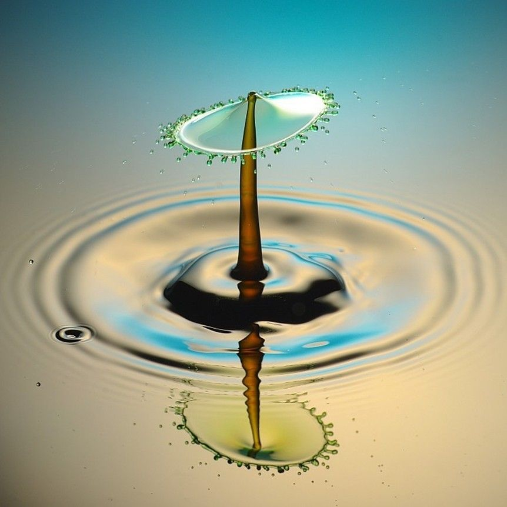
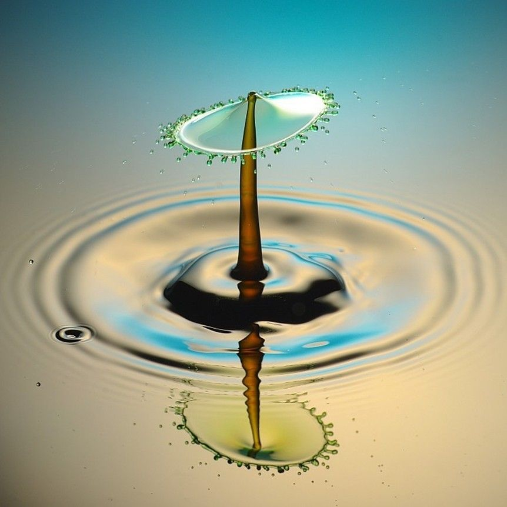

Our seamless interaction with the world is no small feat. Packing delicate groceries, stacking glassware, reshuffling precariously balanced cans in a cabinet—each action selected and calibrated based on expectations about its physical consequences. In daily life, we continually form implicit, online physical predictions to guide our decisions and actions, and this process can often feel as effortless as the act of seeing.
Our Research Areas

Intuitive Physics
We investigate the computational mechanisms that allow us to make split-second assessments of physical structure and dynamics in everyday environments using psychophysics and computational modeling.

Visual Perception
Our lab studies how visual information transforms into physical understanding, exploring the complete pipeline from perception to action through functional brain imaging.
Physical Prediction
Understanding how the mind predicts trajectories, stability, and physical outcomes—the brain's physics engine that guides our interactions with dynamic environments.
Dynamic Perception in Action
 
